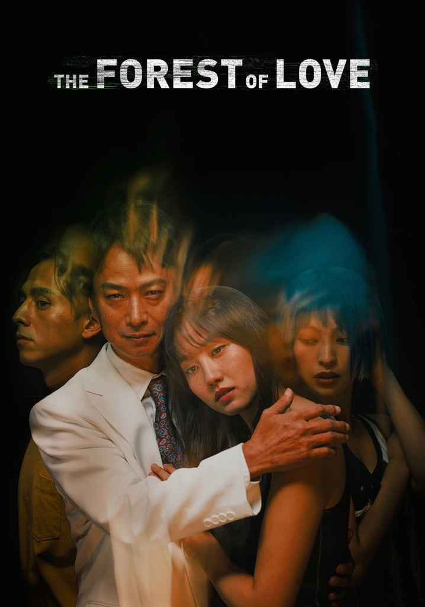

CAPÍTULO 1:
«Aquel hombre que se cuestiona la posible existencia
de Dios en el momento exacto de su muerte...
¡Suele morir!»
Sam Shimata- Axiomas Nihilistas I
✦
PRÓLOGO
¿Mis compañeros me observaban, pero a la vez no?
—¿Qué pasó?
—No sé.
—¿Cómo que no sabes? —Me encogí de hombros.
Los notaba más hostiles de lo común. Mis palabras no podrían describirlo, del mismo modo que estas no sirven con ellos. Soy invisible, pero yo a ellos tampoco los veo; mi mirada se pierde en los tachones de mi cuaderno. No los veo porque sus ojos, narices y bocas —todo lo que los hace humanos— desaparecieron hace tiempo, desde el momento en que nací. No… más bien parecen cosidos. «¿Acaso no te conoces a ti mismo?» En mi lecho de muerte recordé la conversación que tuve con un vagabundo. Era de algún país de Medio Oriente. De esas personas con las que no quisieras toparte en la vida, pero que te los encuentras. De rostro manchado por carbón —creo yo—, poseía tantas arrugas que lo hacían ver centenario; no obstante, poseía una vitalidad extraordinaria para los de su edad. Y tras ponerse sus harapos como taparrabos, me guió hasta el bosque de Gardeny, en donde me dijo que ahí —una cueva escondida entre matorrales y hierbas— era su casa, por lo que nos adentramos como en sueños. Recordé notar que a medida que avanzábamos, el camino se iba haciendo más y más pequeño, cual túnel de Gulliver.
Lo único más que supe de ese hombre es que días posteriores a nuestro encuentro cometió un asesinato en masa; murieron 82 personas (incluyendo a él).
En verdad, nada de eso era real, creo yo.
He estado teniendo sueños bastante raros, la verdad. Blue, Evangelia, y, sobre todo tú, Exy…
Vi el tomo de Axiomas Nihilistas a través de mi armario, escondido como si no quisiera que lo vea, y me acordé de aquella famosa frase:
—Aquel hombre que se cuestiona la posible existencia de Dios en el momento exacto de su muerte, suele morir —dije.
Tumbado sobre mis heces, hace más de 2 semanas que no me ducho. Dos semanas que, mirándolas en retrospectivas, no se puede decir que nada haya ocurrido. Más bien todo lo contrario; me emborraché, tomé drogas, tuve sexo, me rompieron la nariz, cumplí los 18. ¿Todo eso, para qué?, me reí. ¿Dios existe? Si existiera, ¿sería capaz de sacarme de las más oscuras profundidades?
Un rayo de luz se coló por los pequeños agujeros de la persiana, dejándome ciego. Recibí una llamada.
[MAMÁ-17:15]
En efecto… «aquel hombre que…» Un deje de cansancio se sentía en mi garganta. No podía respirar. Accioné el revólver, acariciándome la sien. Ahora que me acuerdo, lo conseguí de María. Está majara, la verdad.
Mi último rastro de vida…
Adiós.
Recomendaciones de la Hoya

The Forest of Love
2019
Película muy buena de Sion Sono y aunque ni de lejos es de sus mejores, me parece que logra su cometido. También tiene una serie de 7 ep, la cual es mejor que la peli. Me gustó el personaje de Joe Murata super gracioso. Veo mucho Blue John en él ns pq.
Recomendado para aquellos que les guste el humor sexual y absurdo japonés supongo xddd.